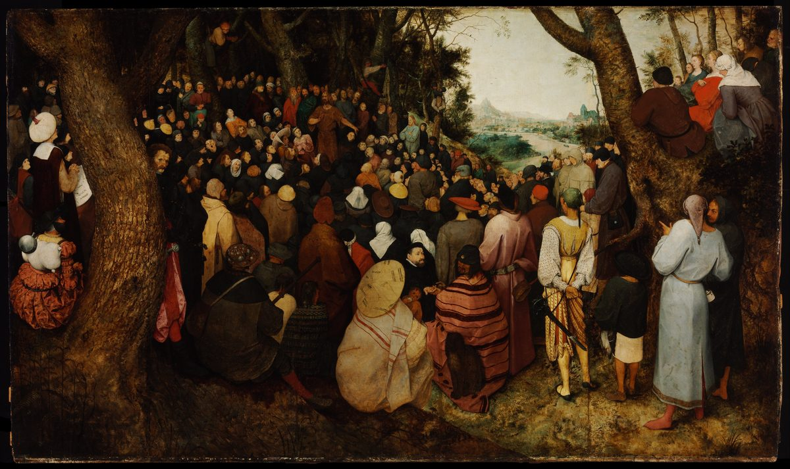

Luke 3 — The Mister Translation

⚠ The preacher is the smallest thing in the picture. Bruegel puts John far back in the trees, one arm raised, and fills the canvas with the crowd — which is the proportion of Luke’s chapter, where the crowds, the tax collectors and the soldiers ask “What shall we do?” (vv10–14). They are dressed as his own neighbours: Flemish townspeople and peasants, men in turbans and bright striped cloaks, and in the foreground a man in the slashed costume of a sixteenth-century mercenary soldier, sword at his hip. The river behind them stands in for the Jordan. The picture was painted in 1566, the year open-air Protestant preaching outside the cities of the Low Countries drew large crowds, and it is often read against that background.
{kind=link}
⭐ Seven rulers, then a man in the desert. Luke opens the ministry the way a historian of his day dated an event: by who was in charge. An emperor, a Roman prefect, three tetrarchs and a pair of high priests — the Roman world from the top down, then the temple in Jerusalem — and only after all of them does the sentence reach its subject, a priest’s son in the wilderness. Luke has done this twice already, each time more fully: “in the days of Herod, king of Judea” (1:5), then Augustus and Quirinius (2:1–2, both already on these pages). Five of the proper names in this verse appear nowhere else in the New Testament: Tiberius, Ituraea, Trachonitis, Lysanias and Abilene (John’s lake of Tiberias, named after the emperor, is a different word).
⚠ Which year is the fifteenth? Augustus died on 19 August AD 14, and counted from his death Tiberius’s fifteenth year falls in AD 28–29, the date most historians give. Some commentators count instead from AD 11 or 12, when Tiberius was granted authority over the provinces jointly with Augustus (Suetonius, Tiberius 21), which moves the year back to AD 26–27 and eases the arithmetic of Jesus’s age at v23. The grant is attested; that anyone ever numbered Tiberius’s years from it is not, and a 2022 survey of the literary, coin and inscription evidence by Andrew Steinmann found no example. This library’s chronology gives the whole range, AD 26–29, and says which end rests on which count.
⭐ “Rule” and “governing” are one root. Tiberius’s hēgemonia and Pilate “governing” (hēgemoneuontos) share a stem, and the verb stands in only two verses of the New Testament: here, and 2:2, “while Quirinius was governing Syria.” Luke dates the birth by one governor and the preaching by another, with the same word. The three tetrarchs get a participle each — tetraarchountos, “being tetrarch” — three times in one sentence. The NWT 1984 renders the title ‘district ruler’; the KJV, ASV and NIV all keep ‘tetrarch’.
⚠ Lysanias, once called Luke’s mistake. Josephus knows a Lysanias, son of Ptolemy, whom Mark Antony put to death in the 30s BC — sixty years too early for Luke’s date — and nineteenth-century critics such as Julius Wellhausen took Luke to have borrowed the name and misplaced it. But Josephus himself later speaks of “Abila of Lysanias” and of Abila as “the tetrarchy of Lysanias” (Antiquities 19.275; 20.138), and an inscription cut in the rock beside an ancient road at Abila, north-west of Damascus, records a road and a temple built by “Nymphaeus, freedman of Lysanias the tetrarch,” for the safety of “the lords Augusti.” If the Augusti are Tiberius and his mother Livia, as is usually argued, the stone falls between AD 14 and 29, and there was a second, later Lysanias with exactly the title Luke gives him. The date rests on that argument, not on a year written on the stone.
⚠ “Under the high priest Annas and Caiaphas” — one office, two names. Annas — Ananus son of Seth, in Josephus — was made high priest by Quirinius and deposed by the governor Valerius Gratus, conventionally in AD 15; his son-in-law Joseph Caiaphas held the office from about AD 18 to 36 (Antiquities 18.26–35, 95). Luke writes the noun in the singular, epi archiereōs, and then gives it two holders. The shelf mostly repairs the grammar: the KJV reads ‘Annas and Caiaphas being the high priests’, the Douay ‘Under the high priests Annas and Caiphas’, the ASV ‘in the highpriesthood of Annas and Caiaphas’; the NWT 1984 keeps the singular, ‘chief priest’, and attaches it to the first name. This translation keeps Luke’s awkwardness, because it is informative: Annas, deposed years earlier, was still the power in the family, and Luke calls him “the high priest” again in Acts 4:6 (not yet on these pages). A small curiosity of the Greek: Hanna, the genitive of Annas’s name, is spelled exactly like the prophetess Anna of 2:36.
⭐ “The word of God came to John” — a prophet’s call, in the prophets’ own formula. The Greek Old Testament opens the book of Jeremiah with exactly this construction, “the word of God which came to Jeremiah” (to rhēma tou theou ho egeneto epi Ieremian), where the Hebrew has only “the words of Jeremiah” (Jeremiah 1:1, already on these pages). No other prophetic book opens that way in the Greek. Luke introduces John the way the Greek Bible introduces Jeremiah. Luke’s noun is rhēma, not logos: the word that has run through his first two chapters — “no word will be impossible with God,” “may it happen to me according to your word” (1:37–38), Simeon released “according to your word” (2:29). And “in the wilderness” closes a bracket: the last we heard of this child, “he was in the wilderness until the day of his public showing to Israel” (1:80). This is that day. The NWT 1984 reads ‘God’s declaration came to John’; the Douay reads ‘the word of the Lord was made unto John’, following the Clementine Latin Vulgate’s verbum Domini (the modern Nova Vulgata reads Dei, of God); and the TLB reads ‘a message came from God to John’ and moves the whole list of rulers into a parenthesis after it, which puts the subject first and loses the long approach.
⭐ His father sang this job description over his cradle. “A baptism of repentance for the forgiveness of sins” is, word for word, the phrase of Mark 1:4 (already on these pages). But in Luke it is also an answer. Zechariah, the night his mouth was opened, sang that this child would “go on ahead before the Lord to prepare his ways, to give his people knowledge of salvation in the forgiveness of their sins” (1:76–77). Here come the ways, the preparing and the forgiveness, aphesis, in that order. And Luke will close his Gospel on the same pair of nouns: the risen Jesus sends out “repentance and forgiveness of sins” to be proclaimed to all the nations (24:47, not yet on these pages). The Douay reads ‘the baptism of penance’, the Latin Vulgate’s rendering, which the metanoia entry tells the history of; the NWT 1984 reads ‘baptism [in symbol] of repentance’, its brackets marking words it adds to the Greek; the KJV reads ‘the baptism of repentance for the remission of sins’.
“All the region around the Jordan.” Perichōros tou Iordanou is the Greek Old Testament’s phrase for the country Lot looked at and chose, “the whole plain of the Jordan” (Genesis 13:10–11, already on these pages; the Hebrew is kikkar ha-yarden). Lot chose it because it was well watered. John comes to the same water with a different use for it.
⭐ Luke keeps quoting after the others stop. All four Gospels apply Isaiah 40:3 to John (Matthew 3:3, Mark 1:3, John 1:23, all already on these pages). Only Luke runs on through verses 4 and 5. What the other two-thirds of the quotation have to do with John is the rest of this chapter: a ravine filled, a mountain brought low, crooked made straight. The two questions the first line raises — whether “in the wilderness” belongs to the voice or to the road, and why “a highway for our God” became “his paths” — are set out in the note at Matthew 3:3 and on this library’s own Isaiah 40:3, which prints the Hebrew’s punctuation, “A voice calls: ‘Clear in the wilderness the way of Jehovah.’” The NWT 1984 prints ‘Prepare the way of Jehovah’ inside Luke’s quotation, restoring the divine name the Greek writes as kyrios.
⭐⭐ “All flesh shall see the salvation of God” — a line the Hebrew does not have, and a word Luke has used before. The Hebrew of Isaiah 40:5, as this library translates it, reads “the glory of Jehovah shall be revealed, and all flesh together shall see it” (Isaiah 40:5). There is no “salvation” in it. The Greek Old Testament, which Luke is quoting, reads “and the glory of the Lord shall appear, and all flesh shall see the salvation of God” — it supplies the salvation. Luke quotes the Greek and leaves out its first clause, the glory, so that his quotation ends on the word. And the word is sōtērion, the rare neuter noun Simeon used with the child in his arms: “my eyes have seen your salvation” (2:30, already on these pages). An old man in the temple saw what all flesh is promised to see. Luke uses this noun in three places only — there, here, and in the last speech of Acts, where Paul tells the leaders in Rome that “this salvation of God has been sent to the nations” (Acts 28:28, not yet on these pages). Outside Luke’s two books it appears once more in the New Testament, in “the helmet of salvation” (Ephesians 6:17). The shelf: the KJV, ASV and Douay read ‘the salvation of God’; the NIV ‘all people will see God’s salvation’; the TLB turns the thing into a person, ‘all mankind shall see the Savior sent from God’; and the NWT 1984, alone, keeps the neuter, ‘the saving means of God’ — the most exact rendering on the shelf, and consistent with its ‘your means of saving’ at 2:30. This translation keeps “salvation” in both places, so that a reader can hear Simeon in it, and keeps “all flesh,” which is what both the Hebrew and the Greek say.
“Every ravine.” Pharanx is a gorge or ravine, a deep cut in the land, sharper than the English “valley”: the KJV and ASV both read ‘Every valley shall be filled’, where the NWT 1984 has ‘Every gully’. The last clause reads, word for word, “and the rough ones into smooth roads”.
⭐ The same sermon, a different audience. These three verses stand almost word for word in Matthew 3:7–10 (already on these pages), and Mark has none of them — material shared by Matthew and Luke alone, which scholars who hold the two-source theory assign to a lost collection of sayings they call Q, and others explain as Luke reading Matthew; the library states both. But Matthew’s John sees “many of the Pharisees and Sadducees” coming and aims the words at them. Luke’s John says them “to the crowds coming out to be baptized” — the whole queue at the water is called a brood of vipers, and in Luke nobody walks away offended. They ask what to do.
“He would say.” Elegen is imperfect, the tense of something done repeatedly: this is what John used to say, not a single speech. The TLB catches it with a paraphrase, ‘Here is a sample of John’s preaching’; the NWT 1984 reads ‘he began to say’; the KJV reads ‘Then said he’, a single occasion.
⭐ Fruits, plural — and then Luke lists them. Matthew has “fruit worthy of repentance” in the singular (karpon); Luke has karpous, and the next five verses say what the fruits are: a second tunic given away, a tax collected honestly, a soldier’s pay that is enough. The KJV and ASV keep the plural, ‘fruits worthy of repentance’; the NIV reduces it to ‘fruit in keeping with repentance’; the Geneva, a Protestant Bible, reads ‘amendment of life’ for repentance, where the Catholic Douay has ‘fruits worthy of penance’ — the Reformation argument about this word, printed in two books on the same shelf, and told at the metanoia entry. Luke’s other small change is “do not begin to say” (arxēsthe) where Matthew has “do not presume to say.”
Vipers, stones and the axe. The insult about parentage, the pun that works only in Hebrew and Aramaic — banim, children, and avanim, stones — and the axe already propped against the trunk are set out in the Matthew 3 note. One thing that note could not say: Luke uses echidna, viper, in only one other place, and it is a real snake — the viper that fastens on Paul’s hand on Malta (Acts 28:3, not yet on these pages), in the same chapter where “the salvation of God” reappears.
⭐ Only Luke has these five verses. Three groups ask one question — the crowds, the tax collectors, the soldiers — and each gets an answer sized to what they actually do all day. None of them is told to leave his job. The question is the one the Pentecost crowd asks Peter in Luke’s second volume, in the same two Greek words, “What shall we do, men, brothers?” (Acts 2:37, already on these pages) — and Peter’s answer is John’s whole program: change your minds, be baptized, “for the forgiveness of your sins.”
Two tunics. The chitōn is the garment worn next to the skin; the Twelve are later told not to put on two (Mark 6:9, already on these pages). John is not asking for a surplus to be shared but for half of what a person is wearing. The shelf dresses it differently: the KJV reads ‘two coats’, the NIV ‘two shirts’, the NWT 1984 ‘two undergarments’ — the last is closest to where the garment was worn.
“Teacher” — and the first person in Luke to be called it is John. The tax collectors address him as didaskale, the title Jesus will be given for the rest of this Gospel. His answer takes the toll-farming system as it is and forbids only its profit: “Collect nothing more than what you have been ordered to.” The KJV reads ‘Exact no more than that which is appointed you’, the ASV ‘Extort no more’; the TLB adds a government the Greek does not name, ‘no more taxes than the Roman government requires you to’.
Whose soldiers? Strateuomenoi is “men on military service,” and Luke does not say whose. Galilee and Perea were Herod Antipas’s, not Rome’s, and most commentators take these as Jewish troops in a client ruler’s pay, perhaps escorting the tax collectors of the verse before; Roman auxiliaries are also proposed.
⭐ Three words from the barracks. Diaseiō is to shake thoroughly — the verb seiō, from which seismos, earthquake — and in ordinary Greek it meant extorting money by intimidation. It stands nowhere else in the New Testament, and English happens to have the same idiom, which is why this translation prints “shake down.” Sykophanteō is to squeeze money out of someone by threatening a false accusation; it appears in one other verse, and the speaker is the chief tax collector of Jericho, Zacchaeus: “if I have extorted anything from anyone by false charges, I give back four times as much” (19:8, not yet on these pages). The soldiers’ sin and the tax collectors’ sin turn up together in one man, sixteen chapters later, and he repays them. The first half of sykophantēs is the Greek for fig, and Plutarch repeats an old story that the name began with informers against illegal fig exports, offering it as something one “cannot wholly disbelieve”; it remains a guess. The word’s English descendant, “sycophant,” has drifted from the informer to the flatterer. And opsōnion, the soldier’s ration-money, is the word Paul chose for “the wages of sin is death” (Romans 6:23, not yet on these pages). The shelf on the first command: the KJV reads ‘Do violence to no man’, the ASV ‘Extort from no man by violence’, the NWT 1984 ‘Do not harass anybody’, the NIV ‘Don’t extort money’; on the second, the Douay reads ‘neither calumniate any man’.
⭐ “The people were waiting in expectation” — the phrase that opened this Gospel’s story. Prosdokaō, to wait expectantly, is Luke’s word: “the people were waiting for Zechariah” outside the sanctuary (1:21, already on these pages), and now for his son. John himself will use it from prison, sending two disciples to ask Jesus, “Are you the one who is coming, or are we to expect another?” (7:19–20, not yet on these pages). The man the crowd wonders about will one day wonder the same thing about someone else. Only Luke lets the reader overhear the crowd asking whether John was the Christ, in the hesitant Greek optative (mēpote… eiē, “whether perhaps he might be”); in John’s Gospel the Baptist says it outright, “I am not the Christ” (John 3:28, already on these pages).
“Stronger than I.” Ischyroteros is Mark’s word too (1:7). Luke uses it once more, in Jesus’s own image of the strong man guarding his house until “one stronger than he” comes and overpowers him (11:22, not yet on these pages). Matthew’s John is unworthy to carry the sandals; Luke’s, like Mark’s, to untie the strap — a difference the Matthew 3 note weighs. So does the question of the capital letters in “the Holy Spirit and fire”: the NWT 1984 prints ‘holy spirit and fire’ in lower case, the rest of the shelf capitalizes. What only Luke can add is his second volume, where the Spirit comes on the apostles with “tongues as of fire” (Acts 2:3, already on these pages). Whether John’s fire is that one, or the fire that burns the chaff in the next breath, readers have argued both ways, and the sentence holds both.
⚠ “To clear… and to gather” — purpose, not prediction, in the older text. The critical text has two infinitives: the winnowing fork is in his hand in order to clear the floor and gather the wheat. The Byzantine text reads two future verbs, as Matthew 3:12 does, and the Reformation shelf follows it: the KJV reads ‘and he will throughly purge his floor, and will gather the wheat’, the Geneva ‘he will make clean his floor’; the ASV has the infinitives, ‘thoroughly to cleanse his threshing-floor, and to gather the wheat’. The fork, the floor and the asbestos fire are described in the note at Matthew 3:12; the adjective “unquenchable” stands in the New Testament only there, here, and at Mark 9:43 (already on these pages).
⭐⭐ “He proclaimed the good news” — Luke’s word for the angels’ announcement, used of a sermon about an axe. Euēngelizeto is the verb the angel used to the shepherds, “I bring you good news of a great joy” (2:10, already on these pages). Luke applies it, with no sense of strain, to vipers, the axe at the root and unquenchable fire. And “exhortations” is from parakaleō, whose noun is the “consolation of Israel” Simeon was waiting for (2:25) — the same word covers comfort and urging. The shelf divides on keeping the good news: the KJV reads ‘preached he unto the people’ and the Douay ‘did he preach to the people’, both without it; the ASV reads ‘preached he good tidings unto the people’, and the NWT 1984 ‘continued declaring good news to the people’.
⭐ Luke puts John in prison one verse before the baptism of Jesus. Mark tells the arrest much later, as a flashback, while the Twelve are out on their mission (Mark 6:17, already on these pages). Luke closes John’s story here, so that when Jesus is baptized in the next verse John is already off the stage — and Luke never says who baptized him. Readers explain the order in two ways: as Luke’s habit of finishing one strand before taking up another (he did the same with Mary, sent home before John is born, 1:56), or, following Hans Conzelmann’s influential reading, as a line drawn between two eras, the time of the Law and the Prophets and the time of Jesus — “the Law and the Prophets were until John” (16:16, not yet on these pages). The library states both.
⚠ “His brother’s wife” — unnamed in the older text. The critical text does not name the brother, and neither does the Byzantine majority text; the Textus Receptus, the printed Greek of the Reformation, adds “Philip,” from Mark and Matthew, and so the KJV reads ‘Herodias his brother Philip’s wife’, as does the Geneva, where the ASV reads ‘Herodias his brother’s wife’. Mark and Matthew call him Philip; Josephus, describing the same marriage, calls Herodias’s first husband simply Herod, a son of Herod the Great by Mariamne, and makes Philip the tetrarch of verse 1 the husband of her daughter Salome (Antiquities 18.136). The wider tangle of the family is set out at the Herodias entry.
“Rebuked” — and not only for the marriage. Elenchō is to expose, to show someone to be in the wrong. Luke widens the charge to “all the evil things Herod had done,” and then counts the arrest itself as one more of them: “he added this too, on top of them all.” Josephus tells the arrest from the other side: Herod, he says, feared that John’s hold on the people might end in a revolt, and sent him in chains to the fortress of Machaerus, east of the Dead Sea, where he was killed; and when Herod’s army was later destroyed, some Jews took it as God’s punishment for what he had done to John (Antiquities 18.116–119). Josephus gives a political motive, Luke a moral one, and both can be true at once.
⭐ The baptism is told in a subordinate clause. The main verb of the sentence is “heaven was opened”; the baptism is a genitive absolute tucked in front of it, “Jesus too having been baptized and praying.” No baptizer is named. What Luke adds is the praying: only Luke has Jesus at prayer here, and he will show him praying again at the turning points of the ministry (proseuchomenon at 5:16, 9:18 and 11:1, not yet on these pages). “Was opened” is the same verb form as the night Zechariah’s mouth “was opened” (1:64): the father’s silence ended with it, and the son’s ministry begins with it. Mark’s heavens are “torn open” (Mark 1:10, already on these pages).
⭐ “In bodily form” — only Luke says it. Matthew, Mark and John all say the Spirit came down “like a dove.” Luke adds sōmatikō eidei, “in bodily form”: something was there to be seen. The adjective appears once more in the New Testament, for “bodily training” (1 Timothy 4:8), and its adverb in “the whole fullness of deity dwells bodily” (Colossians 2:9; neither yet on these pages). The KJV reads ‘in a bodily shape like a dove’ and the NWT 1984 ‘in bodily shape like a dove’; the TLB drops the word, ‘in the form of a dove’.
The voice, and the word from the angels’ song. “You are my beloved Son; in you I am well pleased” is, in the text printed here, the same Greek as Mark 1:11, and the note at Matthew 3:17 traces its three clauses to Psalm 2:7, Genesis 22:2 and Isaiah 42:1. “Well pleased” is eudokēsa, the verb of eudokia, the good pleasure the angels sang about at 2:14. Luke uses the simple verb and noun four times in his Gospel — 2:14, here, 10:21 and 12:32 — and every time the one who is pleased is God. The NWT 1984 reads ‘I have approved you’, catching the aorist as a settled verdict.
⚠⚠ “Today I have begotten you” — the other reading of the voice. One Greek manuscript, the fifth-century Codex Bezae, with Old Latin witnesses, reads instead “You are my son; today I have begotten you” — Psalm 2:7 whole, the coronation verse (not yet on these pages). It is not a late oddity. Justin Martyr, in the second century, quotes the voice at the Jordan in that form twice (Dialogue with Trypho 88 and 103), and a line of early writers after him; Augustine knew copies of Luke that read it, while noting it was said not to be found in the older Greek ones (Harmony of the Gospels 2.14.31). Bruce Metzger’s Textual Commentary judges it secondary, an assimilation to the psalm, though “widely current during the first three centuries”; Bart Ehrman, in The Orthodox Corruption of Scripture (1993), argues that it is what Luke wrote, and that scribes replaced it because it could be read as God adopting Jesus at his baptism. The critical text, the Byzantine text and all seven versions on this library’s English shelf print the reading given here. The library states both cases and does not vote.
“About thirty.” Joseph was thirty when he stood before Pharaoh (Genesis 41:46), and the Levites entered their service at thirty (Numbers 4:3, both already on these pages); David was thirty when he began to reign (2 Samuel 5:4, not yet on these pages). Luke does not draw any of these lines. He says hōsei, “about,” and the word is doing work: if Jesus was born before Herod’s death in 4 BC (1:5), and baptized in the fifteenth year of Tiberius counted from AD 14, he was past thirty-one; on the earlier count of the reign, nearer thirty. “About” covers both.
⚠ “When he began” — began what? The participle archomenos has no object, and the shelf supplies one: the NIV ‘when he began his ministry’, the ASV ‘when he began to teach’, the NWT 1984 ‘when he commenced [his work]’, with the brackets marking its addition. The KJV, reading the Byzantine word order, joins the verb to the age: ‘Jesus himself began to be about thirty years of age’. Luke has left out a noun before — “in my Father’s ___” (2:49) — and here, as there, this translation leaves the gap. Luke’s own later usage fills it: in Acts the ministry is the time “beginning from the baptism of John” (Acts 1:22, already on these pages).
⭐⭐ “As was supposed” — and the last time this verb appeared, the supposing was wrong. Nomizō, to suppose, to take for granted, stands in Luke’s Gospel only here and at 2:44, where Mary and Joseph, “supposing him to be in the travelling company,” went a day’s journey without him. Read the last three paragraphs of this Gospel together: Mary says “your father and I” (2:48); the boy answers with “my Father’s” (2:49); a voice from heaven says “my Son” (3:22); and the narrator, beginning a list of fathers, calls Jesus the son of Joseph “as was supposed.” The KJV and ASV print ‘(as was supposed)’ in parentheses; the NIV reads ‘so it was thought’, and the NWT 1984 ‘as the opinion was’.
⭐ The list runs uphill. Matthew’s genealogy opens his Gospel and runs down, “Abraham fathered Isaac” (Matthew 1:2, already on these pages). Luke’s waits until the ministry begins and runs up, from Joseph to God. The Greek writes the word “son” exactly once, before Joseph; after that each link is only the article tou, “the one of,” seventy-six times — seventy-five names from Joseph’s father Heli back to Adam, and then God. Counting Jesus and Joseph, that is seventy-seven people from Jesus to Adam. Most English translations supply “son” at every link, as the KJV does, ‘which was the son of Levi, which was the son of Melchi’. The NWT 1984 is honest about the supply, printing ‘[son] of’ with brackets each time; the Douay keeps the bare Greek shape, ‘who was of Melchi, who was of Janne’; the TLB turns the whole list around into sentences, ‘Joseph’s father was Heli’, down to ‘Adam’s father was God’. This translation prints the Greek’s “of,” which is strange in English and is meant to be: it is how the list ends on God without calling anyone God’s son in so many words. Irenaeus, writing around 180, counted “seventy-two generations” in it (Against Heresies 3.22.3), a figure no surviving manuscript supports.
⚠ Heli, not Jacob. Matthew makes Joseph the son of Jacob (1:16); Luke makes him the son of Heli, and from there to David the two lists share almost nothing. Three explanations have long pedigrees. (1) The oldest, from Julius Africanus in the early third century, preserved by Eusebius (Ecclesiastical History 1.7): Jacob and Heli were half-brothers by one mother; Heli died childless, Jacob married his widow under the law of Deuteronomy 25:5–6 (already on these pages), and Joseph was Jacob’s son by nature and Heli’s by law. Africanus admits he can offer no evidence for it. (2) That Luke gives Mary’s line and Heli was her father: reported as the view of “many” already in the fifth century, revived by Annius of Viterbo around 1490 and held by John Lightfoot in the seventeenth; its advocates read the parenthesis as “the son (as was supposed, of Joseph) of Heli,” and its difficulty is that the Greek names Joseph, not Mary. A Talmudic passage sometimes cited for it is doubtful in both its reading and its reference. (3) That the two lists are independent traditions that cannot be harmonized. The library states all three and votes for none.
⭐ Nathan, not Solomon. Matthew runs the royal line through Solomon and the kings of Judah (1:6–11). Luke runs it through Nathan, another son of David and Bathsheba, who never reigned — not the prophet Nathan, a different man. He stands in the lists of David’s sons born in Jerusalem (2 Samuel 5:14; 1 Chronicles 3:5), and once more among the mourners at the end of Zechariah, “the family of the house of Nathan apart” (Zechariah 12:12; none of the three yet on these pages). Readers who look for a reason point to Jeremiah’s word on Coniah, one of the last kings of Solomon’s line: “none of his seed will prosper, sitting on the throne of David” (Jeremiah 22:30, already on these pages) — an argument as old as Irenaeus. Others limit the curse to Coniah’s own time. Luke gives no reason.
⚠ Where the two lists touch: Shealtiel and Zerubbabel. For two generations after the exile the names agree — Shealtiel and his son Zerubbabel, the governor who rebuilt the temple (Haggai 1:1, already on these pages) — and then they part again. The fathers disagree even there: Matthew, like 1 Chronicles 3:17, makes Shealtiel the son of Jeconiah, the exiled king (Matthew 1:12); Luke makes him the son of Neri. Chronicles itself wavers: in the Hebrew of 1 Chronicles 3:19 Zerubbabel is the son of Pedaiah, Shealtiel’s brother, and only the Greek there makes him Shealtiel’s son. And the next name up Luke’s list, Rhesa, is not among the children of Zerubbabel that 1 Chronicles 3:19–20 names. In 1853 Lord Arthur Hervey proposed that it is not a name at all but the Aramaic rēshā, “head, prince” — a title, “Zerubbabel the prince,” read as a son. It remains a conjecture.
A few names the shelf reads differently. At v29 the Greek name is Iēsou, the same name as Jesus — Hebrew Joshua — and this translation keeps it as Luke spelled it: the ASV and NWT 1984 read ‘Jesus’, the NIV ‘Joshua’, and the KJV ‘Jose’, a different name from the Byzantine text. At v26 the critical text reads Iōsēch, Josech, where the Byzantine reads Joseph, which is why the KJV has four Josephs in the chapter and the ASV three. And Luke spells Nathan Natham.
From David back to Abraham the two Gospels agree, with three small knots. At v32 the text printed here reads Iōbēl, Jobel, with the first hand of Codex Sinaiticus and with Codex Vaticanus, where most manuscripts and the Nestle-Aland edition read Obed, the name in Matthew 1:5 and Ruth 4:17. Boaz’s father is Sala, the reading of the oldest witnesses; most manuscripts bring it into line with Matthew’s Salmon (Matthew 1:4–5, already on these pages), and so do all seven English versions on the shelf. And at v33 Amminadab’s father, Ram in Ruth 4:19 and Matthew 1:3, survives in at least eight different forms in the manuscripts — “a bewildering variety of readings,” in Bruce Metzger’s phrase. The critical text prints “of Amminadab, of Admin, of Arni”; Codex Vaticanus has only Admin and Arni; the Textus Receptus has Aminadab and Aram. The shelf shows the spread: the KJV reads ‘the son of Aram’, the NIV ‘the son of Ram’, the ASV ‘the son of Arni’ with no Admin, and the TLB, the one version on the shelf with both names, ‘Amminadab’s father was Admin; Admin’s father was Arni’.
From Abraham back to Shem, Genesis 11 in reverse — Terah, Nahor, Serug, Reu, Peleg, Eber, Shelah, Arpachshad, Shem, the line this library translated from the Hebrew at Genesis 11:10–26 (already on these pages). Luke spells the names as the Greek Old Testament does — Arphaxad, Phalek, Sala — and this translation prints them as the Genesis pages do, so that a reader can find each one there.
⚠⚠ Cainan — a name that is in the Greek Old Testament and not in the Hebrew. Between Arpachshad and Shelah, Luke has a Cainan. The Hebrew has none: “When Arpachshad had lived 35 years, he fathered Shelah” (Genesis 11:12, already on these pages), and 1 Chronicles 1:24 agrees. But the Greek Old Testament has him, with his own ages — Arphaxad fathers Kainan at 135, and Kainan fathers Sala at 130 (Genesis 10:24 and 11:12–13 in the Greek) — and so does the Book of Jubilees. Luke’s list here follows the Greek Bible his readers used. Codex Bezae leaves the name out, and whether the early papyrus P75 did is disputed; the critical text, the Byzantine text and all seven English versions on the shelf keep him — the KJV, ASV and NIV all read ‘the son of Cainan’. The Greek Genesis also runs longer than the Hebrew in the ages of the fathers after the flood, so the two chronologies of the world before Abraham differ by centuries; Archbishop Ussher’s famous date of 4004 BC for the creation is built on the Hebrew.
From Shem back to Adam, Genesis 5 in reverse — Noah back through Lamech, Methuselah, Enoch, Jared, Mahalalel, Kenan, Enosh and Seth to Adam, the ten names of Genesis 5 (already on these pages). Luke spells Kenan Kainam, exactly as he spells the Cainan of v36, and the two are printed differently here only because one of them has a Hebrew original to be matched to.
⭐⭐ “Of Adam, of God.” Adam has no human father, so the chain ends in God. Luke does not write “son of God” here, only the last “of”; but the list stands between two sentences that do. One verse before it the voice from heaven says “You are my Son” (v22); a few verses after it the devil opens with “If you are the Son of God” (4:3, not yet on these pages). Genesis had already put sonship and likeness together: God made humankind “in the likeness of God,” and Adam “fathered a son in his own likeness, after his image” (Genesis 5:1–3, already on these pages). ⭐ And this is where Luke 2’s last line pointed: a genealogy that runs the other way from Matthew’s and does not stop at Abraham. Matthew’s Jesus is son of David, son of Abraham (1:1) — the promise to Israel. Luke’s goes past Abraham, past the flood, to the first human being, the father of every reader of the book.
Patterns worth carrying forward
Where this translation keeps the words exact / distinct: the high priest in the singular with its two names, as Luke wrote it; the word of God for rhēma, the word of 1:37–38 and 2:29; forgiveness for aphesis, as at Mark 1:4 and Acts 2:38; salvation for the neuter sōtērion, the same English as Simeon’s at 2:30; all flesh, as both Isaiah and Luke say it; fruits in the plural; What shall we do? three times, matched to Acts 2:37; shake down for diaseiō, where the English idiom and the Greek verb are the same picture; to clear… to gather as purpose, with the older text; proclaimed the good news, the angels’ verb; was opened, the same verb as Zechariah’s mouth; in bodily form; when he began, with no object, as Luke left it; as was supposed, the verb of 2:44; Jobel, Sala, Admin and Arni as the text printed here reads them; and of, not “son of,” for the seventy-six links of the genealogy, ending “of Adam, of God.”
Echoes paid. From Luke 1: the child who “was in the wilderness until the day of his public showing to Israel” (1:80) has his day (v2); the song that promised he would “prepare his ways” and bring “the forgiveness of their sins” (1:76–77) comes true in those words (vv3–4); “the people were waiting” for the father (1:21) and wait again for the son (v15); the verb that opened Zechariah’s mouth (1:64) opens heaven (v21). From Luke 2: the governing of Quirinius (2:2) and of Pilate (v1), one verb; Simeon’s neuter sōtērion (2:30) is what “all flesh shall see” (v6); the angels’ good news (2:10) and their eudokia (2:14) come back in “proclaimed the good news” (v18) and “well pleased” (v22); the parents’ wrong supposing (2:44) returns in “as was supposed” (v23); and Luke 2’s own closing promise — a genealogy that runs the other way from Matthew’s and does not stop at Abraham — is kept.
Echoes planted. John waiting in prison for “the one who is coming” with the crowd’s verb (7:19); the “stronger one” who overpowers the strong man (11:22); the Law and the Prophets “until John” (16:16); Zacchaeus, who confesses the soldiers’ false charges and repays them fourfold (19:8); “repentance and forgiveness of sins” proclaimed to all the nations (24:47); and, in Acts 28, the viper and “this salvation of God.”
Next in sequence: Luke 4 — the Son of God of the voice and the genealogy is taken into the wilderness and tempted in those very words, “If you are the Son of God,” then reads Isaiah in the synagogue at Nazareth and is driven to the edge of a cliff.